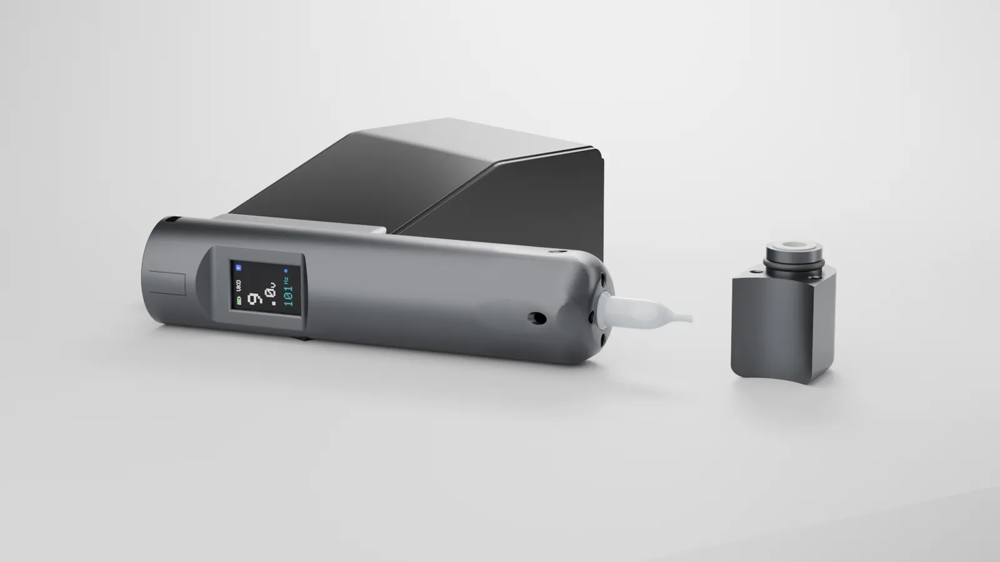

Cero desperdicio
Se acabó preparar vasos de más «por si acaso».
En Vinko Solutions hemos mejorado la máquina de tatuaje y la hemos elevado a un nuevo estándar: la tinta, en su propio cartucho; cero desperdicio; sin contaminación cruzada. Y todo ello, al alcance de todos los artistas del tatuaje del mundo.
Siempre con la máquina, nunca abierta sobre la mesa.
Sin vasos, sin contaminación cruzada.
Una máquina pensada para el día a día del estudio.
Menos preparación. Más tiempo para tu trabajo.
Queremos que cualquier artista del tatuaje, en cualquier parte del mundo, pueda trabajar sin desperdiciar tinta y sin riesgo de contaminación cruzada. Por eso hemos creado el VK0.

Se acabó preparar vasos de más «por si acaso».
Tu tinta en cartucho y un tubo desechable nuevo en cada sesión.
Menos residuos de tinta y biológicos al final de cada sesión.
Menos preparación y menos limpieza. Más tiempo tatuando.
Sin vasos ni elementos de más.
Un trabajo más fluido, de principio a fin.
Únete al programa piloto y trabaja con el VK0 antes que nadie.